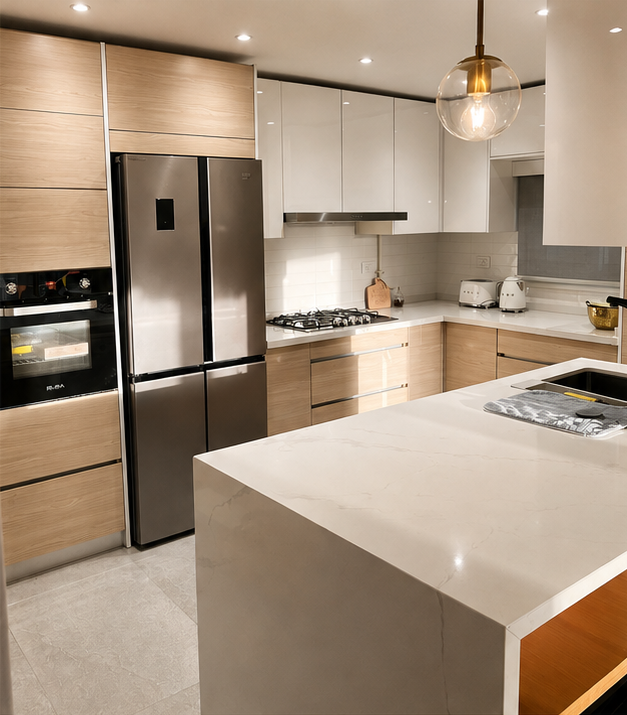

VILL / COVER
دليل الهوية
Brand guidelines / 2026

قرار واضح.
شكل له سبب.
اسم الاتجاه البصري / Visual direction descriptor - not campaign copy
اللون والاتجاه معتمدان.
الدليل والتطبيقات للمراجعة.
Approved palette and logo. Visual execution and verbal identity drafts; no release authority.
VILL / ESSENCE
الشخصية قبل الزخرفة
Essence / LENS verbal §1
Precise
Short sentences, a named detail, a stated reason
Technical showing-off; invented figures
Calm
Plain, reassuring, no pressure; says what is unknown
Hype, urgency, "luxury", emotional drama
Accountable
Names scope, exclusions, next step, who answers
Absolute guarantees, fixed price, delivery promises
VILL explains every design decision, so the home you approve is the home you get.
HYPOTHESIS-level value statement; question or labelled concept until proof exists.
VILL / DIRECTIONS
اتجاهان. اختيار واحد.
Two directions / decision record
Question → decision → evidence. Original V lean as meaningful boundary.
Editorial register. Useful precision, lower brand distinctiveness.
Selected A before implementation. Measured slope -0.3494 px/px, 19.26° from vertical. Full rationale: ART_DIRECTION.md.
VILL / MESSAGE-HOUSE
الرسالة تحتاج دليل
Message house / exact LENS §2 excerpts
| Pillar | Qualified message | Proof first |
|---|
| Design intelligence | التصميم يبدأ من استخدامك للمساحة | Approved plan, constraint, choice, result |
| Execution control + detail | من قرار التصميم لتفاصيل التنفيذ | Dated site log / QC check / handover record |
| Transparency + accountability | نطاق واضح وخطوات قابلة للمراجعة | BOQ, exclusions, change control, named owner |
No proof line without project + source + date + permission. Otherwise omit it or mark CONCEPT.
Core working promise: One vision. One scope. One accountable team. Qualified only; accountability needs delivery proof. Not a generic campaign headline.
VILL / VOICE
صوت ثابت. نبرة حسب الموقف.
Voice and tone / exact LENS §3
| Context | Register | Length / shape | Tone |
|---|
| Social organic | EG | One decision per post; reason in line 2 | Teaching, warm |
| Paid ad | EG (MSA for headline if multi-market) | Hook + one benefit + one CTA | Direct, never urgent |
| WhatsApp reply | EG | 2-3 lines; ask one question | Personal, brief |
| Proposal / quote | Simplified MSA | Scope, exclusions, terms stated plainly | Formal, exact |
| Site | EG headlines, MSA body/terms | Scannable; proof next to claim | Calm, explanatory |
Constant voice: restrained, architectural, precise, reassuring. Reply timing/SLA is unapproved; this is tone guidance.
VILL / LANGUAGE
العربي أولًا. نفس الفكرة.
Language pairing / LENS §4 + §7
مطبخ مش في طريقك.
A kitchen that stays out of your way.
CONCEPT / DRAFT LENS COPY
One idea per pair
Arabic leads. Each piece has ONE Arabic line and ONE English line that carry the same idea, grouped together, Arabic first, English smaller. English is a rendering of the Arabic, not a second slogan, and never a separate tagline ("LIVE. BETTER.").
| Write | Not |
|---|
| اسأل / اسألنا | أسأل |
| ابعتلنا / ابدأ | إبدأ |
| التفاصيل | تفاصيل تخدم حياتك |
Exact spelling sheet from LENS. Western numerals 0-9: user decision OPEN. Full source snapshot: VERBAL_SOURCE.md.
VILL / LOGO
لوجو واحد. استخدام واضح.
Approved master / no invented variant
On navy / original holding square
On white / retain navy holding square
Approved PNG and read-only PSD only. No transparent/vector variant has been approved. Never extract, redraw, recolour, retype or regenerate.
VILL / CLEAR-SPACE
مسافة تحمي العلامة
Logo clear space / minimum size
H = V HEIGHT / EXCLUSION ≥ H H is the visible V height. Measure clear space to other content and crop edges.
Visible mark ≥140 px on 1080 export; ≥44 px at 360 preview. Print ≥30 mm, proof required.
Original square already holds generous top/bottom navy. Add outer holding field if side clearance requires it; never alter original pixels.
Diagram illustrates exclusion logic; dashed frame does not modify the mark. Original logo proportions preserved in all placements.
VILL / MISUSE
قواعد لا تتغيّر
Logo misuse / selection rules
لا تعدّل
No recolour, shear, opacity, mirrored mark, outline or recreated letters.
لا تقص
Do not crop the visible mark or use a circular mask that cuts geometry.
لا تخمّن
No invented transparent variant, sub-brand or monogram. Use approved master.
If the requested background does not support the original navy square, change the holding field. Do not “fix” the logo.
Invalid treatments are named, not applied to approved pixels. Avatar example retains full original master.
VILL / COLOUR
أدوار اللون
Orange points to a decision / approved v1.1
| Role | Dark | Light |
|---|
| Background / text | Navy / White | White / Navy |
| Muted text | Navy tint 80 | Navy tint 20 |
| CTA / on-orange | Orange / Navy | Orange / Navy |
| Border | Navy tint 80 | Navy tint 20 |
Graphic area excluding photos/logo: dark target 70/25/5, orange #EE8C01 maximum 10%; reverse dominant canvas for light. palette-v1.1.json remains authority.
VILL / CONTRAST
النص له أزواج محددة
Contrast and prohibited pairs / v1.1
| Foreground / background | Ratio | Rule |
|---|
| White / Navy | 17.95:1 | PASS normal text |
| Orange / Navy + Navy / Orange | 7.89:1 | PASS normal text |
| Navy tint 80 / Navy | 11.33:1 | PASS muted dark text |
| Navy / White | 17.95:1 | PASS normal text |
| Navy tint 20 / White | 10.86:1 | PASS muted light text |
| White / Orange + Orange / White | 2.28:1 | FAIL; use navy text, orange decoration only |
Opaque sRGB pairs, normal AA ≥4.5:1, large AA ≥3:1. No untested text over photos; no whole-document WCAG certification.
VILL / TYPOGRAPHY
قوة العربي. هدوء الإنجليزي.
Re-judged bundled type system
كل سنتي
ليه سبب.
Every centimetre has a reason.
CAIRO 900 / AR LEADS| Role | Guide px | Weight / leading |
|---|
| Arabic display | 80-150 | 900 / 1.35 |
| Arabic heading | 42-64 | 800 / 1.4 |
| AR + EN body | 32 | 500 / 1.65 |
| Support / data | 24-30 | 500-700 / 1.5 |
| Latin index | 24-28 | Barlow 700 / 1.3 |
Cairo variable supports 200-1000, SIL OFL bundled. Barlow is narrow: use index labels only, not a logo match. Cairo 700 Latin supports Arabic; no fake stretch/italic. Wider Latin alternatives require later licence/font approval.
VILL / BIDI
سطر واحد. ترتيب صحيح.
Mixed script / actual specimen
مطبخ VILL - 2400 mm (عرض)
Project Assessment - احجز تقييم مشروعك
التاريخ: 2026-10-05 · السعر: EGP 250,000
تَصْمِيمٌ لحياتك (اختبار فقط)
RTL and right alignment. Arabic tracking 0; no tatweel. Whole number + unit isolated. Never mirror logo/photos/plans.
Synthetic QA numbers only, not project measurements/prices. Fallback Cairo → Tahoma; Latin Cairo → Arial. Bundled fonts required for approved fidelity.
VILL / GRID
شبكة تقود النظر
1920 slide / 1080 social / responsive web
Guide: 96px margins, 48px gutters, 24px baseline. Social: 72px margin, 24px gutter; web: 24px mobile / 64px desktop. RTL reading begins in dominant right zone; secondary evidence occupies left. One focal point, not rigid symmetry.
VILL / GRAPHIC-DEVICE
القطع يشرح علاقة
The decision cut / measured original V
One measured edge creates the boundary. The orange span marks the decision, not a new logo.
Slope -0.3494 px/px; lean 19.26° from vertical. Use Δx = h × 0.3494 at every size.
Keep the cut clear of type and original mark. A diagram is explanation, never proof of a project.
Measured scanlines y410-610 in approved original PNG, white threshold RGB>220, least-squares fit. geometry.json contains method/hash. This is graphic grammar, not an alternate logo.
VILL / PHOTOGRAPHY
صور تستحق تمثيل البراند
Current sources are below-standard examples

CONCEPT - BELOW STANDARD
627×715 profile screenshot: soft detail, clutter and source type/rights unknown.
Original photo/render ≥2400px long side; crop must meet delivery resolution without upscaling.
Aligned verticals; natural window light; true materials/finish; controlled glare; one deliberate subject.
People only with documented consent and useful narrative. Never stage a photo as QC/handover proof.
These images demonstrate what must be replaced, not VILL visual standard. No completed-project claim. Photos and renders need explicit source type, rights and project provenance.
VILL / LABELS
التسمية جزء من الحقيقة
Iconography / status / provenance
CONCEPT
Illustrative diagram or unknown-source visual. No inference of built work.
CONCEPT / DIAGRAMRENDER
Clearly identify a documented render as a render. Never call it completed.
PROOF
Project + source + date + permission. QC also requires actual signed record.
01 / 02 / 03
Use simple open geometric icons with consistent 3-4px strokes, never a decorative badge. Status needs word + icon/shape; colour alone carries no status. Actual rights missing → release blocked.
VILL / KITCHEN-AD
إعلان المطبخ
Native 4:5 / question-led entry
مطبخ مش في طريقك.
A kitchen that stays out of your way.
Educational geometry, not real project proof. LENS lines remain drafts and are grouped Arabic first. Live CTA channel TBC.
GUIDANCE EXAMPLE / REVIEWApplication master and native PNG delivered separately; phone/crop QA in qa/. No release approval. Avatar preserves original full logo square; circle simulation does not touch visible geometry.
VILL / CAROUSEL-COVER
غلاف الكاروسيل
Native 4:5 / one detail, one question
ليه الدرج بيفتح كده؟
Why does this drawer open this way?
Educational geometry, not real project proof. LENS lines remain drafts and are grouped Arabic first. Live CTA channel TBC.
GUIDANCE EXAMPLE / REVIEWApplication master and native PNG delivered separately; phone/crop QA in qa/. No release approval. Avatar preserves original full logo square; circle simulation does not touch visible geometry.
VILL / STORY-COVER
غلاف الريل / ستوري
Native 9:16 / recomposed, not resized
كل سنتي ليه سبب.
Every centimetre has a reason.
Educational geometry, not real project proof. LENS lines remain drafts and are grouped Arabic first. Live CTA channel TBC.
GUIDANCE EXAMPLE / REVIEWApplication master and native PNG delivered separately; phone/crop QA in qa/. No release approval. Avatar preserves original full logo square; circle simulation does not touch visible geometry.
VILL / AVATAR
صورة الحساب
Original approved mark / circle simulation
اللوجو الأصلي بدون تعديل.
No monogram or retyped variant.
Educational geometry, not real project proof. LENS lines remain drafts and are grouped Arabic first. Live CTA channel TBC.
GUIDANCE EXAMPLE / REVIEWApplication master and native PNG delivered separately; phone/crop QA in qa/. No release approval. Avatar preserves original full logo square; circle simulation does not touch visible geometry.
VILL / WEB-DECK
نفس المنطق. ترتيب يناسب الشاشة.
Responsive web + deck type mapping
Deck
Display 80/900; body 32/500; data 28/700. One decision per slide. 96px margins, 48px gap.
Web
Desktop display 56/900; mobile 36/900; body 18/500; label 16/700. Arabic first and one CTA; stack evidence after question on mobile.
Social 1080: AR display 84-104/900, EN support 34/500, label 28/700. Cairo → Tahoma fallback; Latin Cairo → Arial. Metric mismatch requires reflow QA.
Responsive HTML specimen and 1440/390 screenshots supplied in qa/. No site publication or implementation acceptance; alternative extended Latin family is a future approved font task.
VILL / GOVERNANCE
قواعد قابلة للتطبيق
Do / don’t and source precedence
| When | Do | Don’t |
|---|
| Need logo | Read approved final/Logo.png | Recreate or extract an unapproved variant |
| Need colour | Read approved final/palette-v1.1.json | Use historical VI colours |
| Need words | Use draft VERBAL_IDENTITY_v1.0 with status | Rewrite or imply approved copy |
| Need execution proof | Require project/source/date/permission | Treat concept diagrams/screenshots as proof |
| Need application | Native AR-first question/detail composition | Reuse rejected generic templates |
Precedence: current user → approved logo/palette + accepted strategy → draft verbal → this guide/examples. Owner: TSST Lead; execution CREATIVE_AG, verbal LENS_AG. Change rules through versioned review.
VILL / VERSION
الإصدار والتواصل
v1.0 / 2026-10-05 / review gates
Authority
Logo + palette approved. Strategy accepted. This guide’s execution and LENS wording are draft for independent Lead/user review.
Open items
Phone, email, website and public contact channel: not supplied. Do not invent or publish. Rights/proof/high-res photos and live placement overlays remain open.
Review route: CREATIVE render QA → independent Lead inspection → user acceptance. Campaign release is a separate decision.
Skills used: 002 versioned guidance; 008 decision-cut direction; 005 bilingual typography; 010 actual render QA. PDF skill applied. Readiness NOT_READY; no launch/spend/contact authority.